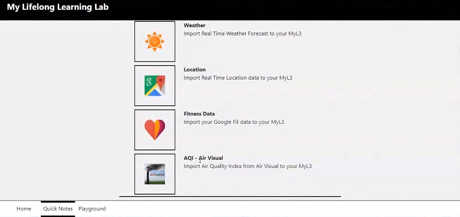
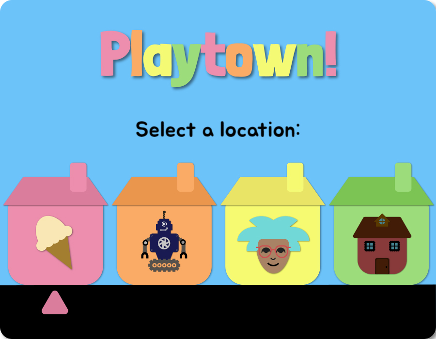

News
Google Summer of Code 2018
From March to August 2018, the Floe project participated in Google Summer of Code (GSoC), a global program funded by Google which focuses on bringing student developers into open source software development. Floe team members mentored five students in a variety of projects, with the aim of expanding the Open Education Resources (OER) community and building connections with budding open source software developers.
Interested students selected from projects suggested by the Floe team and submitted proposals based on these ideas. Once the five students were notified of their acceptance, they were encouraged to engage with the Inclusive Design community and learn more about the Inclusive Design Institute (IDI) , the Fluid Project and Floe. At the end of the coding period in early August, the students each prepared a final report summarizing their work and were invited to present at a Community Workshop which was recorded on video.
The projects that were selected for GSoC this year are diverse in quite a few respects. From technical details like the programming language, framework and style to more obvious aspects like their methods of interaction and presentation. That said, they all endeavoured to improve accessibility in computing and aid learning. What follows is a brief description of each project and a link to its author’s final report.
Import external data to MyL3 by Jeevan Prakash
This project involved prototyping functionality to import data into My Lifelong Learning Lab (MyL3) from external sources allowing learners to track various factors of their lives and examine their effects on learning. The available sources include Google Fit personal fitness data, weather data including air quality from Open Weather Map, and location data for use with Google Maps.

Build a Service for Adaptive content and Learning supports by Kunal Mohta
This project was to consolidate various third-party adaptive learning and learning support services into one easy-to-use web service that can be accessed by tools like textbook readers, language teaching apps or chat bots. Kunal added support for both dictionary and language translation services.
Inclusively Design & Build a Game for Kids by Ria Bhatia
This project was done in close collaboration with Dana Cappel from the Beit Issie Shapiro rehabilitation centre. It involved designing and creating a pair of games which were usable by children with diverse needs. The first, Spifind, is a game where the player uses a spotlight to “catch” a spider within a scene. The game was designed to work with eye gaze tracking hardware to control the spotlight.

Ria also put together a game called Music Mania for preverbal children with visual impairments in order to assist with the development of digital literacy. In order to reinforce learning of the different keys on a keyboard as well as their relative locations, Music Mania has a different musical instrument or note play with the press of each key.
Ria wrote in depth about her experiences building accessible, fun and educational games
Playtown! Creativity through Exploration by Christine Hu
Playtown! is a game which was inclusively designed in close collaboration with Dana Cappel from the Beit Issie Shapiro rehabilitation centre. It was developed for use with switch interfaces, both via single-switch automatic scanning and two-switch step scanning. Playtown! encourages play and free learning by allowing the player to decide which parts of the game to tackle in what order. Christine conducted a great deal of research into the inclusive design process, including reaching out to Dana Cappel independently before acceptance as well as applying the guidelines in Floe’s Inclusive Design Guide. Christine also summarized her development and learning process in a series of blog posts.
Upgrading AChecker by Victor Alagwu
This project consisted of updating the online accessibility checking tool AChecker from running on PHP 5 to PHP 7. AChecker runs an automated accessibility audit on a provided website, HTML file or raw HTML code. Victor’s work included updating the database code and replacing parts of the program that no longer exist in the new version of the programming language. Victor wrote about his experience with upgrading AChecker for GSoc.